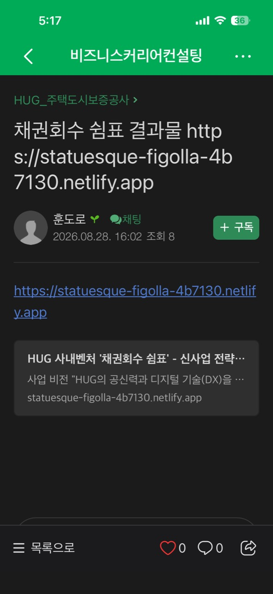
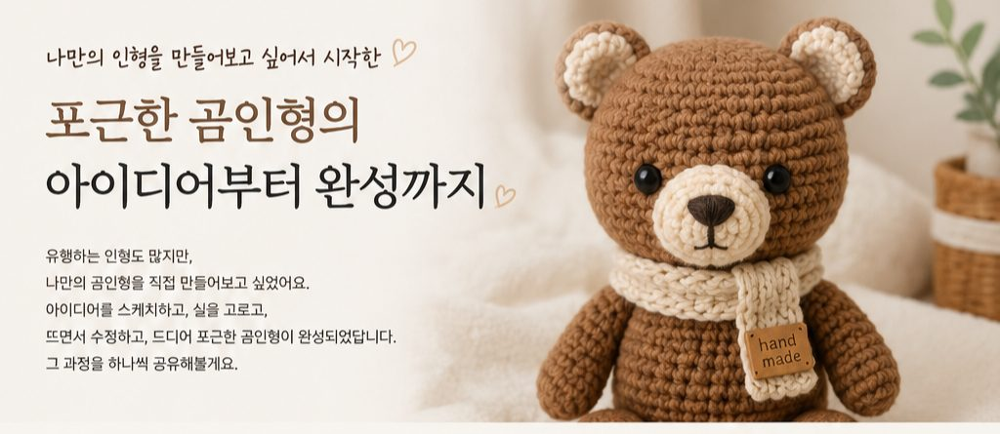
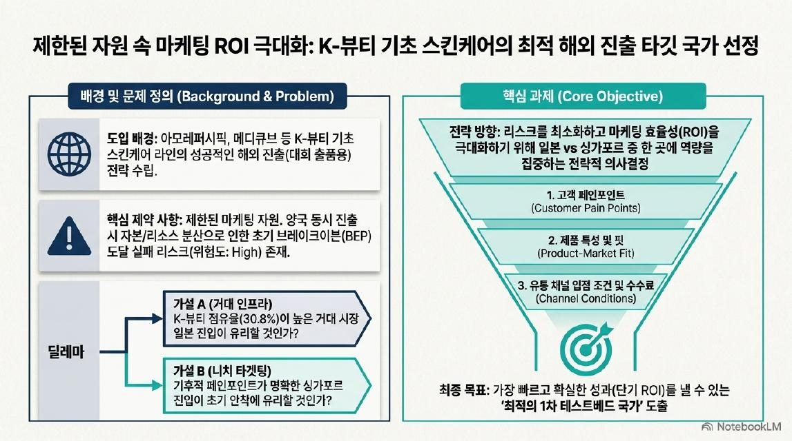
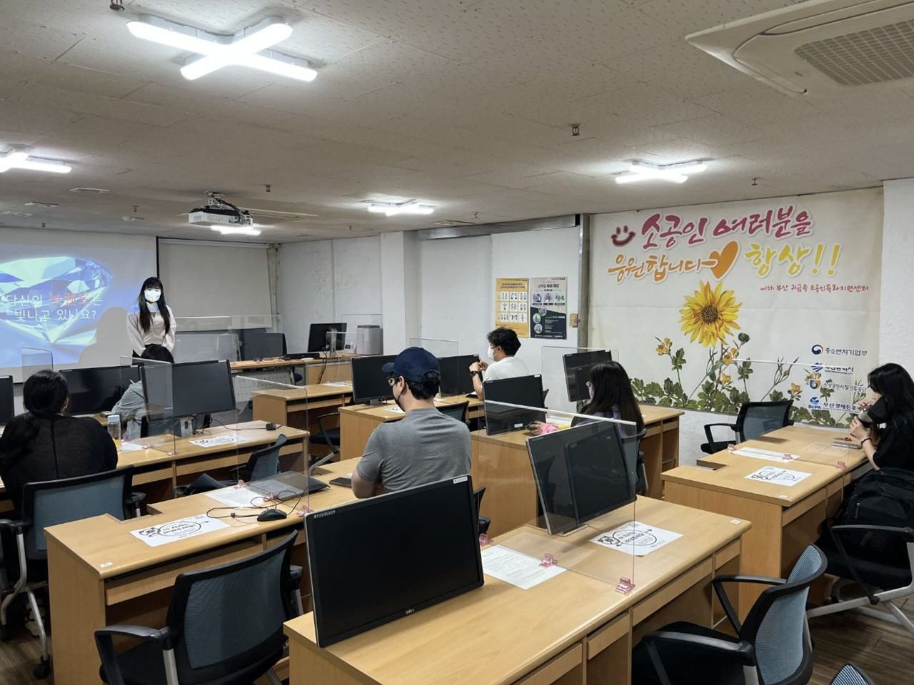
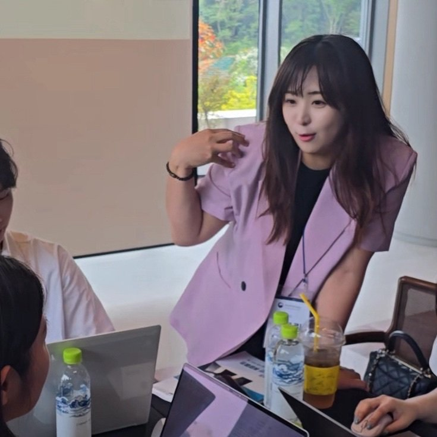

주택도시보증공사 HUG · 재직자 AI 활용 교육 · 2026.08
수업 전
부서 서비스 소개 자료는 있지만, 외부에 보여줄 페이지는 없음. 코딩 경험 없는 직원들.
수업 후
Antigravity로 홈페이지를 만들고 Netlify Drop으로 공개 주소까지 발행. 교육생이 직접 카톡으로 링크를 공유.


부산 · 비즈니스커리어컨설팅
수업 시간 안에 내 에이전트를 만들고, AI 비서를 채용하세요.
교육 담당자시면 대상·인원·일정만 알려주세요. 혼자 창업 준비하시는 분은 무료 실습부터 열어보세요.
수업 전 → 수업 후
주택도시보증공사 HUG · 재직자 AI 활용 교육 · 2026.08
부서 서비스 소개 자료는 있지만, 외부에 보여줄 페이지는 없음. 코딩 경험 없는 직원들.
Antigravity로 홈페이지를 만들고 Netlify Drop으로 공개 주소까지 발행. 교육생이 직접 카톡으로 링크를 공유.

부산청년잡성장카페 · AI 창업교육 4일 · 2026.03
"이런 거 해보고 싶다"는 아이디어 한 줄. 고객이 누구인지, 뭘 해결하는지는 아직 흐릿함.
고객·문제·해결방안이 정리되고, 지원사업 양식에 맞춘 사업계획서 항목별 초안이 내 아이템으로 완성.
.jpg)
수업 마지막 날 받은 메시지 · 이름은 가렸습니다
사천시신활력플러스사업추진단 · 지역사업자 AI 마케팅 교육 · 2024.12
사업계획서는 있는데, 그걸 고객이 알아듣는 홍보 문장으로 바꿔본 적은 없음.
사업의 핵심 한 줄 → 홍보 문구, 광고 영상, SNS 콘텐츠까지 ChatGPT와 영상 AI로 각자 완성.


사천 수업의 결과물 사진은 공개 자료가 없어, 같은 방식으로 진행한 다른 마케팅·콘텐츠 수업의 결과물을 보여드립니다.
수업 중에 만든 연습 결과물이라 교육생 이름은 넣지 않았어요. 해당 기관의 실제 서비스나 사업 성과는 아닙니다.
교육생 후기
 동래여성인력개발센터 · 후기 83장
동래여성인력개발센터 · 후기 83장
.jpeg) 김해여성인력개발센터 · 후기 49장
김해여성인력개발센터 · 후기 49장
 중장년내일센터 · 후기 26장
중장년내일센터 · 후기 26장
 다행복한종합사회복지관 · 후기 8장
다행복한종합사회복지관 · 후기 8장
 사상여성인력개발센터 · 후기 19장
사상여성인력개발센터 · 후기 19장
.jpg) 경남경영자총협회 · 후기 17장
경남경영자총협회 · 후기 17장
 청소년활동진흥센터 · 후기 17장
청소년활동진흥센터 · 후기 17장
.jpg) 양산경총 · 후기 15장
부산청년잡성장카페 · 후기 13장
양산경총 · 후기 15장
부산청년잡성장카페 · 후기 13장
/%ED%9B%84%EA%B8%B0/%ED%99%94%EB%A9%B4%20%EC%BA%A1%EC%B2%98%202024-10-16%20201006.png) 테크노파크 · 후기 11장
테크노파크 · 후기 11장
/%ED%9B%84%EA%B8%B0/%EA%B0%95%EC%9D%98%ED%9B%84%EA%B8%B0_250522%20%EC%98%A4%EC%98%88%EB%A6%BC%20%EA%B0%95%EC%82%AC%EB%8B%98.png) 좋은일자리(주) · 후기 10장
좋은일자리(주) · 후기 10장
 경남투자경제진흥원 · 후기 9장
경남투자경제진흥원 · 후기 9장
카카오톡·설문·메일로 받은 후기를 이름과 연락처만 가리고 올렸습니다. 기관별로 누르면 전체 후기가 열립니다.
기관·기업 교육 과정

재직자 · 공공기관·기업 직원
반복 업무 하나를 골라 내 업무용 에이전트로 만들어 봅니다. 보고서·회의록·공문 초안까지 수업 안에서 완성합니다.
예비창업자 · 창업지원기관 · 대학
창업 아이디어를 고객·문제·해결방안으로 정리하고, 지원사업에 낼 사업계획서 초안을 내 아이템으로 씁니다.
창업자 · 소상공인 · 홍보 담당자
내 상품을 고객 말로 다시 쓰고, 홍보 문구·카드뉴스·짧은 영상까지 ChatGPT와 영상 AI로 만듭니다.
기관 홍보 담당자 · 소상공인 · 전문직 새 과정
ChatGPT·Gemini에 물었을 때 우리 기관·가게가 답에 나오게 만드는 방법. 이 홈페이지에 적용한 과정을 그대로 실습합니다.

강사
오예림 부산 AI·창업교육 강사 · 비즈니스커리어컨설팅 대표
강사 이력 보기 →문의
기관명, 대상, 원하는 날짜, 배우고 싶은 내용을 적어주세요. 아직 안 정해진 건 비워두셔도 돼요. 영업일 기준 하루 안에 답 드립니다.
카카오톡 채널로 상담하기전화나 방문이 편하시면 카톡으로 시간 먼저 잡아주세요.
연락처 남겨주시면 영업일 기준 하루 안에 답 드려요.